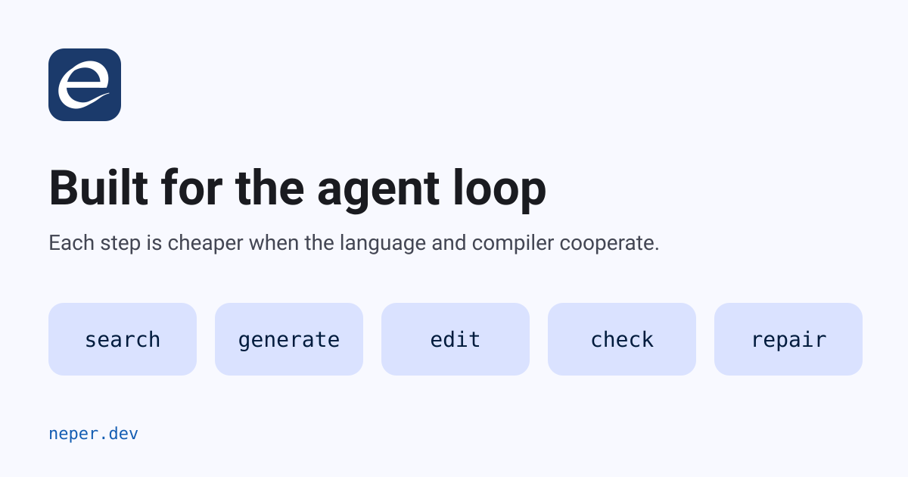

Why Neper is built for the agent loop

A model editing code does not browse it the way you do. It sees a window of text, guesses what lies outside it, and pays for every token it reads and writes. Neper's design goal is that a model should not be able to write a line whose meaning depends on context it cannot see. This post walks through the language rules, the compiler commands and the diagnostics that follow from that goal, runs each one on a small program, and says which of the claims we have not proved yet.
The objective, stated once
Every correctness-relevant dependency must be visible in a checked contract, enforced by the compiler, or reported as an explicit unproved obligation with its origin. Tools must distinguish these cases.
Two limits come with it. Short source and first-pass compilation are not the measure; the measure is total cost per verified success: tokens, turns, retries, escaped defects and false rejections. And every comparative claim stays a hypothesis until a held-out evaluation on two model families passes. Readable syntax does not prove ownership, prevent races or make a compiler correct.
How agents fail on code
The rules below came from failures in measured agent transcripts, not from taste. Each row is closed by a section further down.
| Failure | What the model does | What it costs |
|---|---|---|
| Hidden context | Edits a function without seeing the overload, macro, implicit cast or lifetime that changes its meaning | A plausible, wrong edit that compiles or fails far away |
| Ambiguous search | A text search for a definition returns several hits or none | Whole-file reads; context grows to hundreds of thousands of tokens |
| Hallucinated API | Calls a function that does not exist, or one that is only planned | Repair turns, sometimes a silently wrong fallback |
| Unreadable diagnostic | Misreads a message that names no subject | Three or more turns instead of one or two |
| Brittle edit | Applies a text or line edit to a file that has since changed | Partial application, stale spans |
| Slow check | Waits seconds to minutes per compile | Fewer iterations inside the same budget |
| Temporal bugs | Use after reset, aliasing across container growth, double close | Defects that compile and only trap at run time |
Twelve language rules that make a search reliable
Section 14 of the specification lists invariants that are rules, not style advice. They exist so that a search, a glob or an anchored edit is reliable rather than probabilistic.
| Rule | What it guarantees | Why a model benefits |
|---|---|---|
| One definition per name, no overloading | A search for ^fn dot returns exactly one line in the defining module | One search resolves a name; no overload resolution to simulate |
| Declarations start at column 0 with a keyword | A search for ^fn lists functions; an unclosed bracket cannot cross a declaration keyword | Exact navigation; a dropped bracket is reported where it opened, not 200 lines later |
| File path is the module name | A glob finds a module without opening it | Locating code costs no file reads |
| Every cross-module reference is qualified | A call site names its module, as in mem.alloc | The definition is one search away and the type is in the name |
| No macros, no preprocessor, no textual generation | What you read is what compiles | No hidden expansion to predict |
| No implicit conversions | Every cast is written down and greppable | Numeric-width bugs are visible on the line |
| Order-independent module scope | An insertion can go anywhere; no forward declarations | Edits need no global ordering knowledge |
| One canonical layout | Enforced by neper fmt --check | Minimal diffs; edits land where expected |
| Index as data | neper index emits versioned JSONL of every definition and reference with byte-precise spans | Tools never parse source or re-implement name lookup |
| Enforced casing | snake_case values, PascalCase types, SCREAMING_SNAKE constants | A name's kind is legible without a lookup |
| Tokens and syntax are public data | neper tokens and neper parse give lossless, versioned output | A harness needs no private compiler API |
| Generated code keeps provenance | An optional .e.map.json maps generated spans to their inputs | Generated code stays traceable without a preprocessor |
Run against a program, the first rule is a one-liner. The listing below is the real output for the demo file used throughout this post:
$ grep -n "^fn" main.e
4:fn clamp(value: i64, low: i64, high: i64) -> i64 {
10:fn fill(a: *mem.Arena, count: usize) -> err {
16:fn main(a: *mem.Arena, args: []str) -> err {Three functions, three lines, one definition each. No tool is needed to answer "where is clamp defined".
Hidden context, removed: the no-shadowing rule
Beyond the section 14 list, a local may not reuse a reserved word, a module-scope function, a use qualifier or a builtin. That looks fussy. It is the reason a name means one thing within a file, and it was a leading cause of failed builds in our transcripts. Here is the mistake a model makes, using a builtin name for a local:
use e.mem
fn fill(a: *mem.Arena, count: usize) -> err {
let target = count
if target > 4usize { ret mem.Exhausted }
ret ok
}The compiler refuses it with a stable code and, importantly, tells the model exactly how to repair it:
$ neper check-file main.e . x64 windows --json
code E-NAME-0003
message target is a reserved name and cannot name a local or parameter
span line 11, column 9
fix rename the local and every use of it in its scope
line 11: target_value
line 12: target_valueThe code is the machine discriminator, the span is exact, and the fix lists every site to rewrite, with a file hash as a precondition. A harness can apply it without spending a model turn. Errors are values handled at the statement (try, -> err, ret ok), the grammar is closed at 94 token kinds and 54 syntax-node kinds, and a keyword cannot name a value, type, field or module.
Diagnostics written for the reader that repairs
- Stable codes of the form
E-TYPE-0002. The registry records each code's standing: verified (a conformance golden or a suite pins it), present or planned. At the card's last render all 15 families (CLI, COMPTIME, ERROR, FORMAT, GPU, LEX, LINK, MEM, MODULE, NAME, SAFETY, SYNTAX, TEST, TOOL, TYPE) list every code as verified;E-SAFETYalone has 25. - A catch-all per family (
E-NAME-9999), so a missing code is visible rather than hidden. - A structured payload: expected and actual types where they differ, related sites, and fixes with applicability.
- The identity travels with the repair prompt. We measured a median fix at one to two turns with the code, span and expected-versus-found attached, and three or more without. Repeated codes across consecutive failures mean the message was misread, and the instruction is to re-attach the subject.
- Reject fixtures in the card show the common failures with their expected code before the model causes them.
Ask the compiler, do not read the file
The largest cost lever we found is not syntax. A turn that reads whole files carries 400–500 K tokens of context on Neper's own tree, against 1–5 K when the model asks context-file for the same function. Here is the answer for fill:
$ neper context-file main.e . x64 windows --json --symbol main.fill
signature declared-and-checked fn fill(a: *e.mem.Arena, count: usize) -> err
allocation declared-and-checked allocates from a: nothing it returns holds a pointer
errors declared-and-checked fallible: returns err; the caller tests it or propagates it with try
resources compiler-proved every resource this function owns is consumed on every exit; no view outlives its region or its container's change
dependency compiler-proved e.os interface b8f14586ab8...
dependency compiler-proved e.mem interface ec5a2b162a...
result records 6, bytes 1521, complete trueEach fact carries its provenance: compiler-proved, declared-and-checked, and in the adopted design also trusted-external, runtime-observed and unknown. A comment is never promoted to a fact. The whole answer is 1,521 bytes, pages with --budget, --bytes and --cursor, and every record is bound to a snapshot of the program so a stale answer is detectable.
Every use, resolved
uses-file replaces a text search for call sites. The compiler returns the resolved uses, with provenance and a completeness flag:
$ neper uses-file main.e . x64 windows --json --symbol main.clamp
relation call
provenance compiler-proved
in main.main
at line 17, column 17Edits that apply completely or not at all
The plan commands express an edit as a typed operation the compiler computed: rename a symbol, add a parameter and migrate callers, change a signature, replace an expression. apply-plan is a transaction with a precondition per file, the expected SHA-256. All files match and are applied, or none are:
$ neper plan-rename-file main.e . x64 windows --json --symbol main.clamp --to clamp_percent
edit declaration line 4 clamp -> clamp_percent
edit use line 17 clamp -> clamp_percent
postcondition check-file passes; main.clamp names no function
# someone edits main.e, then the old plan is applied
$ neper apply-plan plan.jsonl --root .
error[E-TOOL-0003]: `main.e` changed since the plan was made; nothing applied
# the file matches the plan again
$ neper apply-plan plan.jsonl --root .
applied 2 edits to main.e
postcondition: check-file passes; uses-file --symbol main.clamp_percent reports uses at 1 sites and main.clamp names no functionThe refusal in the middle is the point. A concurrent change cannot leave a half-migrated codebase, and the model never has to reason about partial application.
The command set
Every command emits versioned JSONL. Standing is read from the compiler and both self-host suites when the card is rendered, and every row below is verified.
| Command | What it answers |
|---|---|
index, tokens, parse | Every symbol and reference with byte-precise spans; lossless grammar output |
fmt | Canonical layout; --check verifies without modifying |
context-file | A function's signature and caller contract (allocation, borrow, mutation, errors, threads); a type's fields, layout and whether it is a resource; a module's catalogue |
uses-file, explain-file | Every resolved use; every dispatch, instantiation and discard |
plan-rename-file, plan-add-parameter-file, plan-change-signature-file, plan-replace-expression-file | A semantic edit with file-hash preconditions and a re-check postcondition |
apply-plan | Applies a plan to every file or to none |
test-impact-file, test-file --only | The tests an edit reaches, and running only those |
query-batch | Many queries over one check; --deadline MS and an instance budget end a runaway request |
check-file | Type-check a file or program |
The card prescribes the loop with no step left to improvisation: locate with index or uses-file, read context-file for what the change touches, make a plan, apply-plan, then check-file, fmt --check, test-impact-file and test-file --only. Every step consumes and produces structured data.
Tokens are measured, not guessed
A lexical token is not a model token; across our corpus there are about 1.27 model tokens per lexical token. The card publishes the cost per terminal under two tokenizers:
| Terminal | cl100k_base | o200k_base |
|---|---|---|
fn, let, ret | 1–2 | 1–2 |
usize | 1 | 1 |
i32, u8, f64 | 2 | 2 |
1usize | 3 | 3 |
[]u8 | 3 | 3 |
[]const u8 | 4 | 4 |
->, ==, += | 1 | 1 |
So the card says to prefer usize where the width is free. The policy is that a spelling change must show a measured token or repair-turn improvement; a character-count argument is not accepted, and where tokenizers disagree the intersection is optimized and the disagreement documented. The same discipline applies to the process: the agent instructions in the repository route every symbol question through the context query before any file read, because that is where the 400–500 K versus 1–5 K gap comes from.
A card that cannot drift
The language card is rendered by script from the grammar revision and stamped with a SHA-256 of its content. A card whose hash is not the render of its grammar is stale. Rule standing is honest: a grammar rule is marked present when copied from the normative grammar, and verified is reserved for explicit executable evidence. The card's traps section lists the failures that ended most measured builds, each with the code it is refused with, and the fix is always a rename or a rewrite, never a flag.
The repository's agent instructions encode the habits the measurements supported: name the queue item and its acceptance list in every build prompt (bare “continue” prompts correlated with a 59–72% repeat rate and six to seven turns per edit), read the card first, resolve symbols before opening files, keep verify-only turns apart from build turns, and apply multi-file edits as one transaction.
Safety as a checkable contract
The hardening plan makes the compiler, not the model, responsible for temporal correctness. The target is affine ownership of arenas and handles, lexical region validity for slices and pointers, and a first-class unsafe boundary, so that a model-generated “reset then slice” or “push then retain view” is rejected at compile time rather than trapped at run time. The unsafe surface (@nocheck, bare union, mem.bitcast, mem.cast, raw dereference, extern) is meant to be enumerable in one bounded query, so a reviewer audits exactly the un-proved part. The plan is explicit that an operation outside the checked subset needs an explicit unsafe boundary, and that an unproved obligation is never presented as a guarantee.
Speed: the loop has to be fast to be used
An edit loop is limited by latency, not throughput. The adopted requirement asks for declaration-level incremental reuse paired with immutable snapshots and complete cache identity, bounded request lifetimes and cancellation, and gates on p50 and p95 “no-op check” and “local edit and revert” latency, frozen from a baseline. The compiler is self-hosted and emits machine code directly. The incremental reuse and the latency budgets are requirements, not yet claimed results.
Evidence, not assertion
- A regression test or it is not done. A behavior counts as done when a test exists that fails if the behavior breaks, written failing first. The test is the specification.
- A held-out, two-family, pre-registered evaluation gates every LLM-experience claim, with the baseline archived beforehand and full harness cost per verified success reported.
- A reproducible token-cost report on a frozen corpus feeds every decision about verbosity.
- Conformance goldens pin the diagnostics, which is why only a verified code is something an edit loop should rely on.
The adopted requirement set
The post-M2 review distilled sixteen requirements. The ones that gate the claim that the language is “optimized for LLM processing” are R01, R02, R03 and R12–R16.
| Requirement | |
|---|---|
| R01 | Compiler-enforced ownership and lifetime; a first-class unsafe boundary; checks kept in optimized builds unless proved away |
| R02 | Semantic context query with provenance on every fact |
| R03 | Token-cost measurement steers syntax |
| R04 | Transactional multi-file repair and refactor with preconditions |
| R05 | Executable, retrievable API catalogue; planned APIs never returned as callable |
| R06 | Edit-loop latency: reuse, snapshots, lifetimes |
| R07 | Held-out two-family evidence gate |
| R08 | Tokenizer grounding as a design input |
| R09 | Unsafe and escape-hatch enumeration as a review surface |
| R10 | LLM cards compiled from the grammar |
| R11 | Structured, AST-level edits over raw spans |
| R12 | Tiered, snapshot-correct fast checks |
| R13 | Causal diagnostics with recoverable compact views |
| R14 | Structured test selection, evidence and summaries |
| R15 | Source and protocol token-pressure budgets |
| R16 | One coherent agent workflow and a verified stop state |
Several of these already show up as shipped, verified commands: the context query, the plans and transactional apply, test impact and the generated card. The compiler-enforced ownership subset, the full unsafe enumeration and the evidence gate are adopted requirements with their own delivery tracks.
Neper is not shown to be better than other languages for LLMs. The public argument that plausible syntax can hide lookup, lifetime, ownership and concurrency dependencies is treated as an engineering hypothesis, not as evidence about any model. A checked contract is not business correctness, deadlock freedom or a proof about every schedule, and foreign implementations and raw-pointer lifetimes are not proved by exposing their contracts. Character count is not token count, and first-pass success is not the metric. A clean build from the C bootstrap is not proof either, because the bootstrap is more permissive than the self-hosted compiler.
Summary
- Reliable search: one definition per name, column-0 declarations, path as module, qualified references, enforced casing.
- No hidden context: no macros, overloads or implicit conversions; errors, ownership and unsafe boundaries are written in the source.
- Cheap tokens: a small closed grammar, measured cost per terminal, and a context query in place of whole-file reads.
- A compiler that speaks JSONL: index, context, uses, plans, atomic apply and test impact, all versioned and snapshot-bound.
- Repairable diagnostics: stable verified codes with expected and actual types, related sites and machine-applicable fixes.
- Evidence discipline: a grammar-generated card, regression-test-defined “done”, and a held-out two-family gate before any comparative claim.
The full requirement text is in docs/post-m2-llm-hardening.md and docs/llm-hardening-recommendations.md. For measured numbers from real sessions, including where Neper loses, see what it costs an LLM to write Neper and Dart.